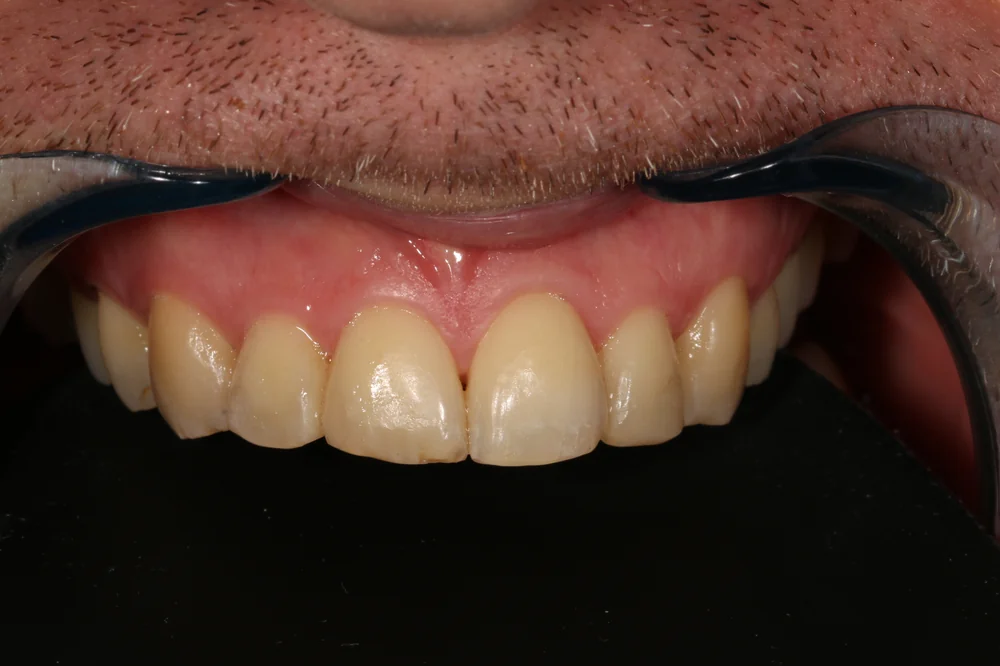
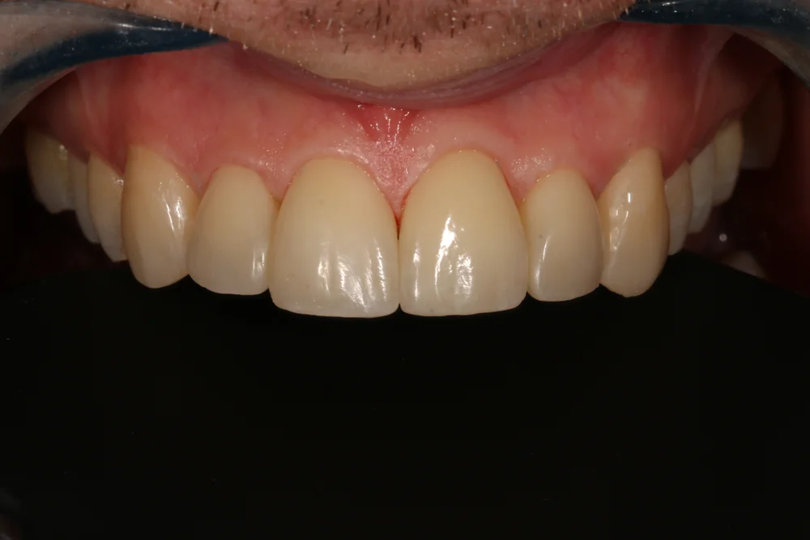
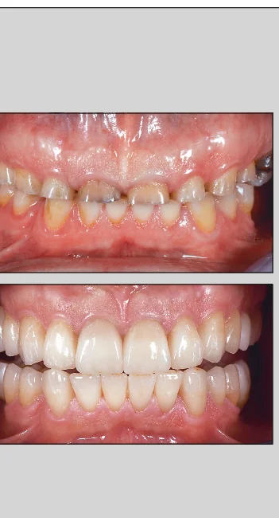

Dantų plombavimas
Ėduonies gydymas ir prarastos danties formos atkūrimas — nuo paprasto plombavimo iki sąkandžio kėlimo darbų.
Tai ėduonies pažeistų danties audinių gydymas, pažeistą vietą atkuriant plombine medžiaga. Ėduonis (danties pažeidimas) gali pasireikšti dėme arba ertme. Dėmelės stadijoje pacientas gali ir nieko nejausti arba jausti jautrumą saldžiam dirgikliui. Kuomet ėduonis yra pažengęs ir yra ertmė — dažniausiai pacientas jaučia skausmą nuo saldaus, šalto dirgiklio, kartais nuo mechaninio dirginimo. Dažnai ėduonis sutrikdo ir estetinį vaizdą.
Jeigu, esant ėduonies sukeltai ertmei, dantį skauda nuolat, ypač nieko nevalgant ar naktį — galima įtarti, kad negydytas ėduonis progresavo ir pažeidė nervinį audinį.
Gydymo būdai
Dantų gydymo būdas priklauso nuo ėduonies pažeidimo gylio ir skausmo. Jeigu tai dėmės stadija — atliekamas konservatyvus gydymas remineralizuojančiais preparatais ir gera higiena. Jeigu tai ertmės stadija — tuomet pažeisti audiniai yra išvalomi, ir plombinių medžiagų pagalba prarasta danties forma atstatoma.
Labai svarbu ne tik atstatyti danties audinius, bet ir atkurti funkciją, estetiką, prieš tai buvusią danties formą. Neatstačius danties funkcijos ir anatominės formos — sutrikdoma natūrali dantų funkcija, įvyksta negrįžtami dantų ir sąkandžio adaptacijos pokyčiai.
Kartais atsitinka taip, kad gydant ėduonies pažeistus audinius pasiekiamas danties nervas (arba pulpa). Tokiu atveju pacientas siunčiamas danties šaknų kanalų gydymui.
Estetinis plombavimas
Tai pažeistų danties audinių atkūrimas, laikantis dantų estetinių parametrų. Estetinės plombos atitinka natūralią dantų spalvą bei blizgesį ir iš esmės yra nematomos. Estetiškai atkuriant dantis, svarbu ne tik medžiagos, bet ir plombavimą atliekančio gydytojo įgūdžiai ir meistriškumas.
Estetinis plombavimas taikomas atkurti nudilusius, nuskilusius, pakeitusius savo natūralią spalvą, pažeistus ėduonies dantis. Plombavimas taip pat atliekamas norint keisti senas plombines medžiagas, atkuriant formą, skaidrumą, blizgumą, spalvą.
Estetinio plombavimo metu dantų audiniai yra šlifuojami minimaliai, o kartais dantų paviršius yra tik pašiurkštinamas. Tikslas — išsaugoti kuo daugiau sveikų danties audinių, atkuriant proporcingumą, estetiką ir funkcionalumą.
Estetinio plombavimo sėkmė priklauso nuo pasirinktų medžiagų ir procedūrą atliekančio gydytojo darbo technikos, kadangi dantų audiniai atkuriami plombavimo medžiagų sluoksniais, artimais natūraliai danties anatomijai. Taip atkuriamas natūralių dantų vaizdas.

Prieš

Po
Estetinio plombavimo privalumai
- Atkuriama danties natūrali anatomija ir estetika
- Procedūra neskausminga, greita
- Šalinama mažiau danties audinių nei protezavimo metu
- Atkurtas dantis yra tvirtesnis
Mūsų klinikos pagrindinis tikslas yra atkurti dantų natūralumą, šlifuojant kuo mažiau danties audinių. Todėl dažnai prieš šias procedūras pacientas siunčiamas gydytojo ortodonto konsultacijai. Geriausi rezultatai pasiekiami dirbant komandiškai, pacientą ruošiant visoms reikalingoms procedūroms. Jeigu prieš dantų plombavimą yra atliekamas netaisyklingo sąkandimo gydymas, ištiesinami kreivi dantys — galima tikėtis maksimalaus ilgalaikio estetinio rezultato, išsaugant sveikus dantų audinius.
Funkcinis dantų plombavimas
Funkcinis dantų plombavimas — tai procesas, atkuriantis pažeisto, nudilusio ar nuskilusio danties anatominę formą ir kramtymo funkciją naudojant aukštos kokybės plombines medžiagas. Ši procedūra atstato dantų biomechaniką, apsaugo nuo tolesnio dilimo ir dažnai suderinama su estetiniu vaizdu.
Funkcinio plombavimo tikslas — atkurti dantų kramtymą, kalbą ir anatomines struktūras, ypač po ėduonies gydymo ar griežimo dantimis pasekmės. Taip pat dažnai ši procedūra naudojama prieš ortodontinį dantų tiesinimą ar kaip viso sąkandžio galutinė procedūra atkuriant tinkamą pacientui sukandimo aukštį.
Tai labai tiksli procedūra, reikalaujanti specialisto įgūdžių, bendradarbiavimo su technikų laboratorija. Funkcinis dantų plombavimas vis dažniau taikomas mūsų klinikos komandiniame darbe — arba kaip pagrindinis gydymas, arba kaip gydymo dalis kartu su protezavimu ar ortodontiniu gydymu.
Sąkandžio kėlimas
„Alytaus implantologijos centro" klinikoje specializuojamasi visapusiškame požiūryje į tinkamo sąkandžio gydymą ir smilkininio apatinio žandikaulio sąnario (TMJ) teisingos fiziologinės padėties atkūrimą. Sukandimo aukščio pakėlimas yra svarbi procedūra, kuria siekiama atkurti dantų sistemos funkcionalumą ir estetiką.
Kam reikalinga atkurti sąkandžio aukštį?
Laikui bėgant, daugelio žmonių dantys nusidėvi, todėl sąkandžio aukštis žemėja. Tai gali sukelti:
- Estetinius defektus
- Galvos skausmus
- Sąnario skausmus, traškesį, kartais „užstrigimą", negalėjimą normaliai išsižioti
- Skausmus kakle
- Kramtymo problemas
Kaip vyksta sąkandžio kėlimo procedūra?
- Paciento ištyrimas. Pacientas įvertinamas kliniškai: dantų nusidėvėjimo laipsnis, bendra burnos sveikatos būklė, sąkandžio tipas, sąnario funkcija, mobilumas, raumenų įtampa. Atliekami kiti radiologiniai diagnostiniai testai.
- Pagaminama speciali kapa, kuri imituoja naują sukandimo aukštį. Pacientas nešiodamas kapą namuose „pratina" savo kramtymo sistemą prie naujo sukandimo. Tokiu būdu pacientas stebimas ir per laiką nustatomas tinkamas sukandimo aukštis. Įdomu tai, kad pacientai, kreipęsi į mūsų kliniką dėl didelių galvos skausmų, žandikaulio „surakinimų" pradėję nešioti pirmą diagnostinę kapą, pajunta žymų palengvėjimą ir gali atlikti ribotas kramtymo funkcijas.
- Sudaromas individualus gydymo planas. Šis gydymo metodas yra laipsniškas, visos procedūros reikalingos atkurti sąnario ir sąkandžio aukštį turi būti atliekamos etapais — nes labai svarbu nustatyti, ar atlikti darbai yra patogūs ir tinkami paciento kramtymo sistemai.
- Gydymas pagal sudarytą gydymo planą. Dažnai prieš pradedant atkurti sąkandžio aukštį taikomas ortodontinis gydymas (breketais arba dantis tiesinančiomis kapomis), šalinami netinkami gydymui dantys, atliekami dantų šaknų kanalų gydymai. Po to seka dantų protezavimas, implantacijos ar plombavimo darbai.
- Pasiekto rezultato palaikymas. Pacientas yra mokomas apie prevencijos metodus, kad būtų išvengta pakartotinio dantų nusidėvėjimo ir smilkininio apatinio žandikaulio sutrikusios funkcijos.

Kainos
Plombavimo kainos priklauso nuo procedūros sudėtingumo ir naudojamų medžiagų. Tikslią kainą nustatome po pirmosios konsultacijos.